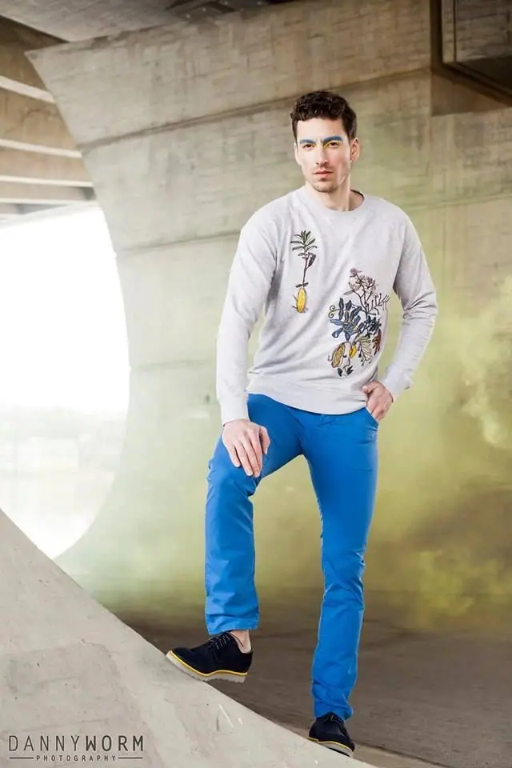

Portréty
Portrétní fotografie je to, čemu se věnuji nejvíc. Spolu vymyslíme koncept, místo i náladu, aby výsledné snímky byly originální a měly pohádkový nádech.

Portrétní a módní fotograf
Jmenuji se Daniel Adamec a jsem mladý fotograf z Prahy. Nejvíc se věnuji portrétům a módní fotografii, kterou propojuji s vlastní módní tvorbou Born !n Porn. Fotím také svatby a ke každému focení přistupuji jako ke společnému projektu.
Zeptat se na termín
Portrétní fotografie je to, čemu se věnuji nejvíc. Spolu vymyslíme koncept, místo i náladu, aby výsledné snímky byly originální a měly pohádkový nádech.
Módu fotím rád a propojuji ji s vlastní módní tvorbou Born !n Porn. Hodí se pro kolekce, lookbooky i autorské projekty.
Svatební focení beru jako společný projekt. Kromě obřadu a portrétů se soustředím i na detaily, aby celý den měl jemný pohádkový nádech.
Mou vášní je fotografie, grafika, móda a další umělecké směry. Ve svých projektech se nejvíc věnuji portrétní a módní fotografii, které spojuji díky vlastní módní tvorbě s názvem Born !n Porn.
Rád pracuji s příběhem a atmosférou. Na mém webu najdete série jako Dreams & Nightmares, Fairytales nebo La Femme project, kde se potkává kouř, skály, les i městský beton. Některé snímky jsou snové a jemné, jiné temné a kontrastní.
Pokud spolu vymyslíme nějaký projekt nebo svatební focení, můžete se těšit na originální snímky s pohádkovým nádechem. Když vás moje tvorba zaujme, budu rád za zprávu.

Pošlete mi pár řádků o tom, co máte v hlavě. Portrét, módní kolekce, reklama nebo svatba, všechno začíná nápadem.
Společně probereme náladu, místo, oblečení a styling. Klidně přineste inspiraci, rád ji rozvinu.
Fotíme v klidu a bez spěchu, venku v přírodě, ve městě nebo v interiéru. Během focení vás povedu, abyste se cítili přirozeně.
Z focení vyberu nejsilnější snímky a upravím je do výsledné podoby. Termín předání domluvíme předem.
Portréty začínají od 2 500 Kč, reklamní focení od 3 000 Kč a svatby od 7 500 Kč. Přesnou cenu vám řeknu, až budu vědět, co si představujete.
Jsem z Prahy a fotím hlavně tady. Pokud máte na mysli jiné místo, napište mi a domluvíme se.
Móda je moje velká vášeň, takže oblečení, doplňky i celkový styl s vámi rád proberu ještě před focením.
Vůbec ne. Během focení vás povedu a pomůžu vám s pózováním, abyste se nemuseli ničím trápit.